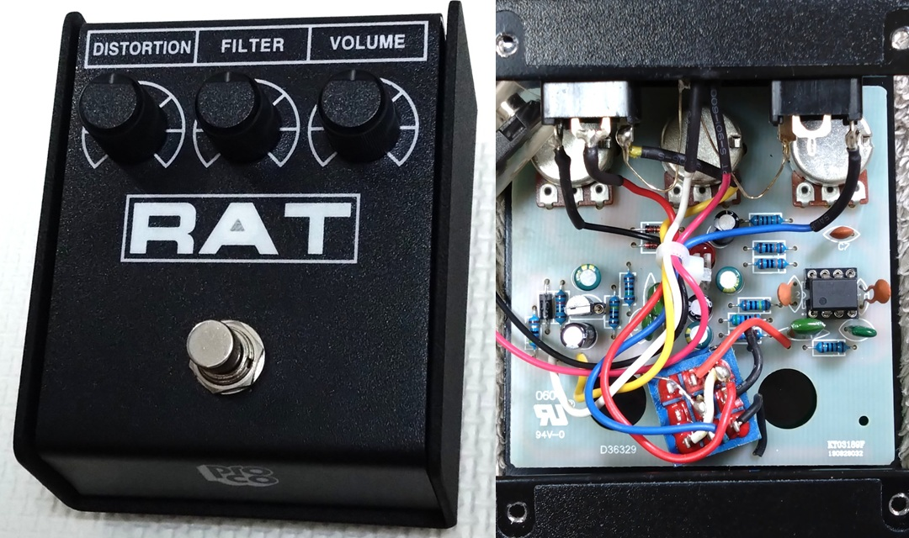
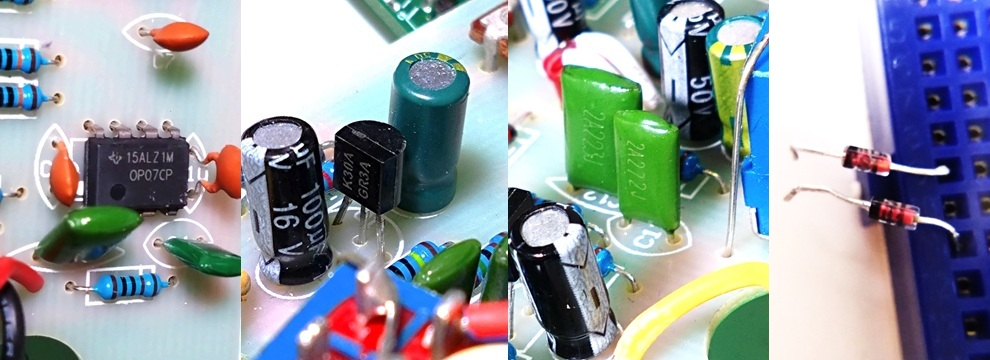
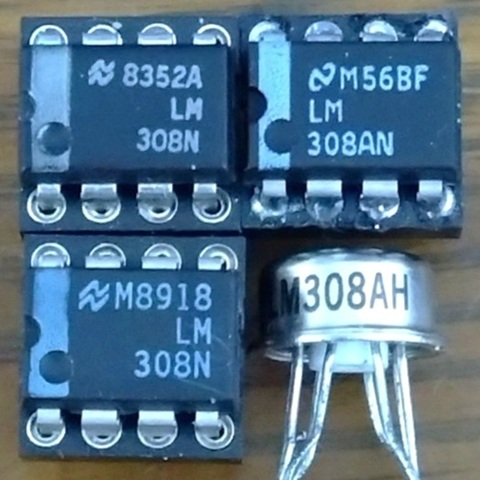
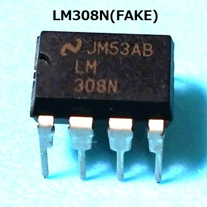
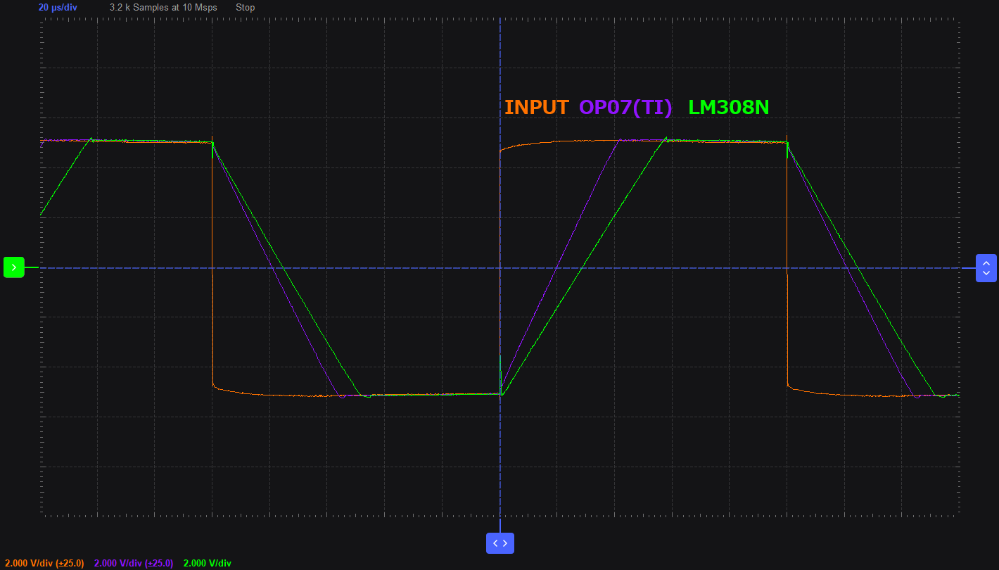
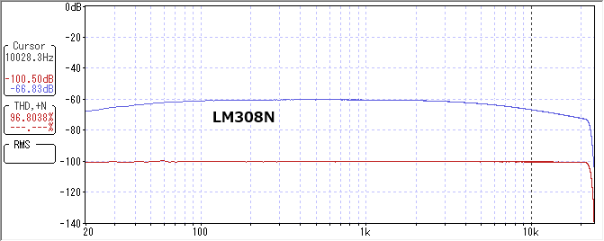
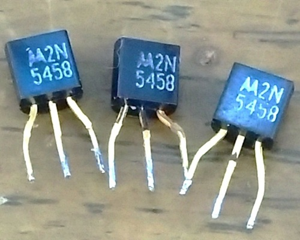
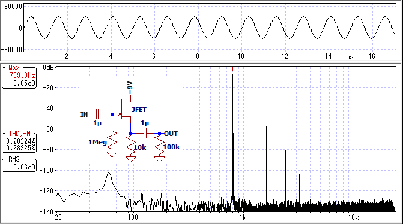

ProCo RAT2 オペアンプ・JFETの検討
2026年01月17日 カテゴリー：修理・改造・解析

古いProCo RATにはオペアンプ LM308とJFET 2N5458が使われています。これらの代替品としてどのようなものが適切か検討しました。RATの歴史や回路解析については下記ページをご参照ください。
- JHS Pedals - PROCO RAT PEDAL MYTHS, HISTORY, AND TIMELINE
- ElectroSmash - ProCo Rat Analysis
【回路図】

一般的なDCジャックが使われている、現行品をトレースしました。KiCadデータ（基板画像入り）はGitHubにあります。

OP07はTexas Instruments（TI）製です。2SK30ATMはAmazonで販売されているものに似ていますが、メーカーは不明です。
{kind=link}
FILTER用コンデンサ C11
出回っている回路図では3.3nFとされているC11ですが、中国製になったあたりから2.7nFが使われている報告がありました（→ 2011年、2018年）。 ポットの抵抗値のカーブは10Aや15Aといった種類があり、CTS製のポットは10Aです。それが別の15Aのポットへ変わった時に、操作感を似せるため2.7nFへ変更された可能性があります。
【オペアンプ】
LM308は現在生産されておらず、入手困難です。信頼できる電子部品店で売られているもの以外は偽物と考えてよいでしょう。 LM108（LM308の高信頼品）は、在庫限りですがRochester Electronicsにあります。 Analog DevicesのLM108Aは1個52ドルで、現実的な価格ではありません。 今回は、Guyatone PS-031とPS-032から取り外したLM308N、ProCo BRATから取り外したLM308AN、トランスミット・サウンズで購入したLM308AHを準備しました。

{kind=link}
ICの表面を削り、偽のマーキングが施してあるリマーク品が出回っています。現在DIPパッケージで生産されている安価なシングルオペアンプは、UA741、TL071、OP07、NE5534があり、LM308の偽物はこれらのリマーク品である可能性が高いです。 UA741やTL071（TL061やTL081も同様)は、オフセット調整が1番ピンと5番ピンなので、このピン間の抵抗値を測定すると数k～十数kΩとなります。 同様にOP07やNE5534では、1番と8番ピン間が数k～数十kΩとなります。 これらに当てはまる場合は偽物なので、もし購入される場合は、開封から測定まで証拠動画を撮っておくとよいです。 ※ LM308の場合、テスターの種類によっては1番と8番ピン間が数MΩと出ることがあります。
オペアンプのスルーレート（SR）と利得帯域幅積（GBW）は、高音域の低下に関わる重要なパラメーターです。LM308のデータシートの図ではSRは0.25V/us、GBWは500kHz程度に見えますが、はっきりとわからないので実測しました。±15V電源、1番と8番ピン間のコンデンサ容量 Cf = 30pFとしています。※ LM308はCfの値によってSRやGBWが変化します。
SR

LM308Nは約0.17V/usで、どの個体も同じくらいの値でした。下がる方が少し速い傾向にあります。GBW
+40dB（100倍）の増幅を行い、周波数特性を測定します。SRの影響を受けないように、充分に低い音量にします（→ オペアンプ｜基礎編 スルーレート）。

10028.3Hzが+33.67dB（48.25倍)なので、GBWは484kHzと計算できます。
{kind=link}
{kind=link}
SRやGBWは電源電圧によって変動します。以下では±4.5V電源で測定した各オペアンプのデータを示します。
| OpAmp | SR(V/us) | GBW(kHz) |
|---|---|---|
| LM308N | 0.16 | 457 |
| LM308AN | 0.16 | 434 |
| LM308AH | 0.18 | 482 |
| LM358 | 0.26 | 608 |
| OP07CP（TI製） | 0.18 | 482 |
| OP07N（HTC製） | 0.21 | 566 |
| TL061CP | 1.53 | 610 |
| UA741CP | 0.34 | 521 |
| OP297 | 0.19 | 418 |
| TLV2221 | 0.26 | 503 |
OP07CP（TI製）はLM308AHと一致し、LM308NやLM308ANにも近い値となっています。LM308の個体差がどの程度かはわかりませんが、OP07CP（TI製）が代替品として最も適切と思われます。
オペアンプ出力以降の回路をバイパスしたRAT2本体を用い、LM308NとOP07CP（TI製）の周波数特性を測定しました。OP07CPは電源電圧を6Vに下げた場合も測定しました。C8の実測値は31.8pFです。
DISTORTION 0%（入力 約0.83Vpp）
SRが低いため、高音域が下がり歪んでいます。LM308Nの方が影響が大きいようです。
DISTORTION 100%（入力 約0.7mVpp）
高音域が大きく低下するのは主にGBWの影響です。電源電圧を下げるとGBWが下がり、特性が変化します。音色調整方法の一つとして頭に入れておいてもよいかもしれません。
{kind=link}
{kind=link}
【JFET】
ProCo BRATから取り外したMotorola製2N5458を3個準備しました。Central製の2N5458はTaydaElectronicsで購入可能です。
JFETのゲートをグラウンドに接続するソースフォロワ回路は、エフェクターでよく使われています。この回路では、入力電圧が大きいとクリッピングする懸念があります。下記ページも合わせてご参照ください。
RATではJFETの入力前にダイオードでクリッピングされるため、電圧は最大で約1.35Vppになります。この電圧の正弦波を各JFETのソースフォロワ回路に通し、歪率を測定しました。
| JFET | ソース電圧(V) | 歪率(%) |
|---|---|---|
| 2N5458 | 2.8 | 0.23 |
| 2N5458 | 2.6 | 0.28 |
| 2N5458 | 2.9 | 0.25 |
| 2N5457 | 1.2 | 0.85 |
| 2SK30ATM-GR（東芝製） | 1.9 | 0.44 |
| 2SK303L-V3 | 0.54 | 7.01 |
| 2SK880-GR | 0.54 | 7.73 |
| 2SK2881-E | 0.80 | 1.60 |
| J112 | 3.2 | 0.08 |
| MMBFJ201 | 0.49 | 8.85 |
| CMPF4393 | 1.8 | 0.29 |
2N5458はわずかにクリッピングが発生しています。同じくらいの歪率で、入手性がよいスルーホール部品はなさそうです。歪率を気にしないのであれば、J112を使うとよいでしょう。
RAT2本体（DISTORTION 0%）での波形・倍音を確認しました。
{kind=link}
{kind=link}
判別するのは難しいかもしれませんが、J112よりも2N5458の方が少し偶数次倍音が多いのが確認できました。